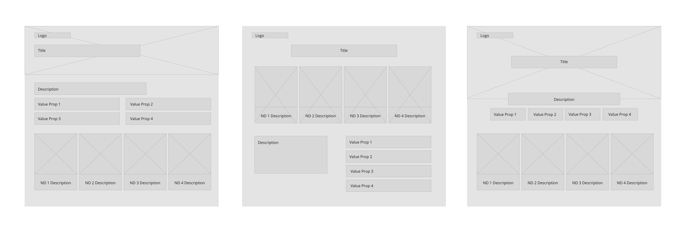
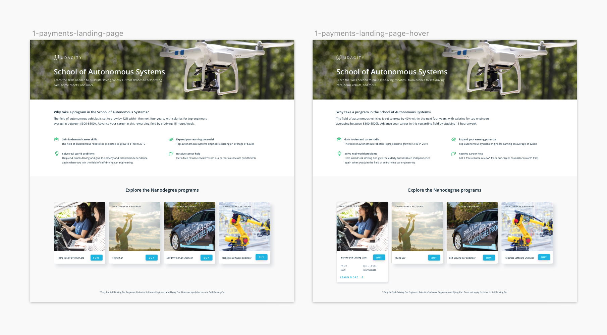
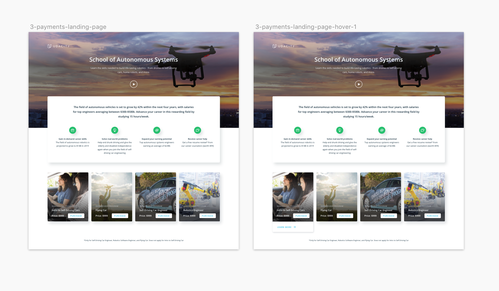
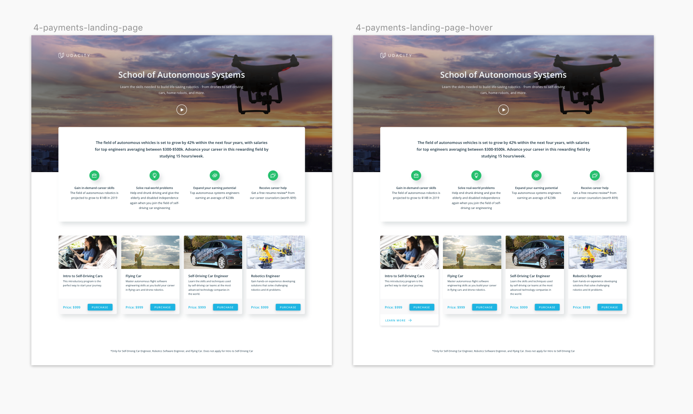
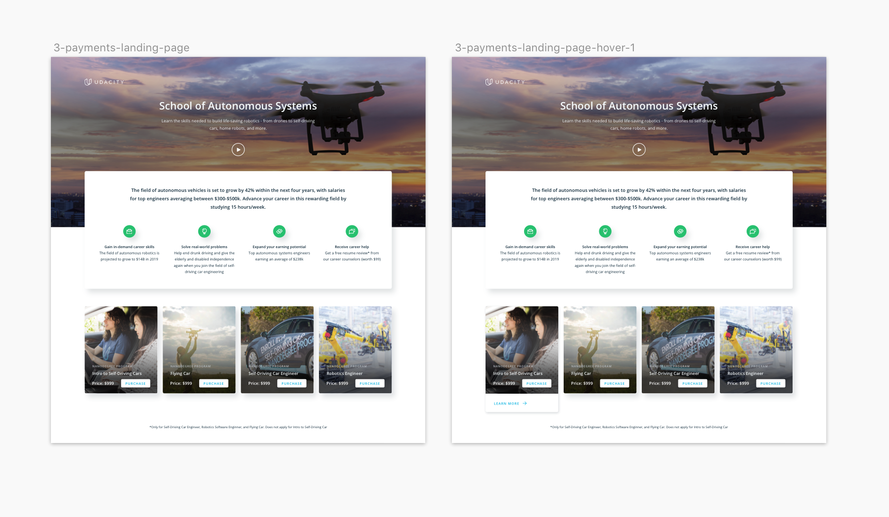
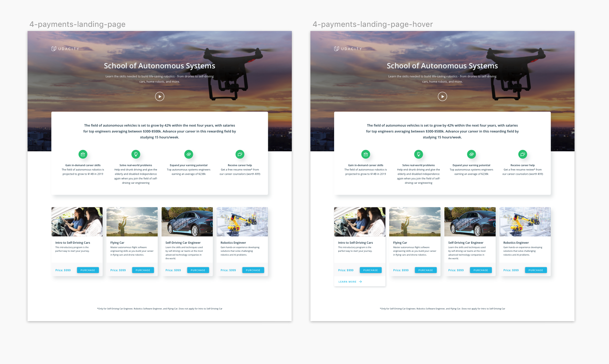

Visual Design
Udacity
Udacity's mission is to democratize education through the offering of world-class higher education opportunities that are accessible, flexible, and economical.
My role as a visual designer at Udacity is to create marketing assets for email, web, mobile, social and print. I develop user flows, wireframes, and prototypes for growth marketing landing pages to improve usability and increase purchase rates.

My Role
- Visual Designer
Timeline
- Oct. 2018 - Nov. 2018
Tools
- Sketch, InVision
Skills
- Branding, Rapid Prototyping, Wireframing, Lead Generation Testing
Introduction
Background
According to research, 77.3% of all online retail orders were abandoned instead of purchased as of August 2017 (source: Shopify).
My team suggested that one of the reasons, specific to our company, may have been that the flow to get to the checkout page had too many steps. Which led us to the hypothesis that if we had a landing page that reduced the number of steps to the checkout page, would that increase conversion rate?
Challenge
Create a page designed to test whether or not having a landing page that went directly to the checkout page would get more conversion.
The current flow of the website is: the user clicks on a retargeting ad, which leads them to a "School of" landing page, which then takes them to a Nanodegree Program overview page (NDOP), which then takes the user to the checkout page.
With this new page, it could cut down the flow two steps by taking the user from the ad to this page and then directly to the checkout page since the user has already visited the NDOP.
Research
Increasing Conversion
We found out that the average time it takes to convert someone to purchase a Nanodegree program is 30 days. This time period is calculated by tracking when the user first lands on the NDOP and the number of days it takes for them to purchase the program. During the in between days, the users are targeted with ads and emails that further encourages them to purchase a program.
One of the major factors of whether or not a user purchases something is trust. In Udacity's case, we want the user to trust that by purchasing one of our programs, it can lead to career growth and professional development. Therefore, it is important to include value props on the web page that solidifies the fact that Udacity has the resources to help achieve one's goals.
Ideation
Wireframes
The requirements of the page were to showcase the name of the school, the four value props of Udacity, and the Nanodegree Programs offered in the school.
Iterations
The idea behind my designs was to showcase the "Buy" button immediately. The user would have landed on this page by clicking on a retargeting ad. I thought that since the user has already visited an NDOP, that having the "Buy" button be the main CTA of the page could have an effect on purchasing rates. I then wanted to make a hover state where the user could click on a button that would lead them to that NDOP. The goal is to have the user click on the "Buy" button which is why I put it on the default state.
 



I presented four different layouts and card designs with slightly different interaction states. I wanted to see what type of hover interaction users responded best to.
After getting feedback, my team responded best to the first design but suggested having the ND card be placed above the fold so that the "Buy" button would be seen immediately. We determined that price, skill level, and term duration were the most important items to include on the card. I then took those suggestions and came up with my final design.
Final Design
Prototype
In my final prototype, I changed the hover interaction to have the white area slide up and reveal more information. That way the user isn't distracted by the image since by hovering, they clearly want to know more information about the program.
For the mobile interaction state, when a user clicks on a card, the card expands to fill the whole screen. The user then can click out of the card and continue browsing.
Takeaways
I learned that marketing goals are quite different than product goals. It was interesting to apply UX design and product thinking to marketing landing pages. The idea was that even if the page failed, that would still be a win because we would know what doesn't work and be able to apply that data to iterate on future designs.
Next Steps
Analyze data results from the user testing and see if the hypothesis is true — having this page would increase purchase rates because it skips two steps in the user flow. Continue iterating on the layout to see if that makes a difference. Conduct this experiment across all schools to see if different audiences have different responses.